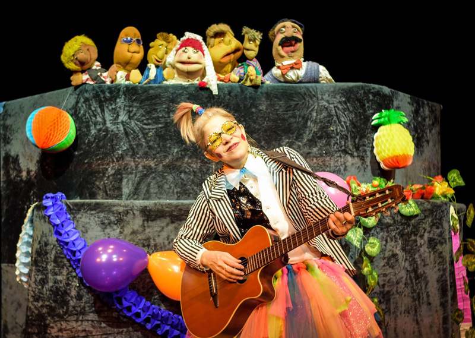
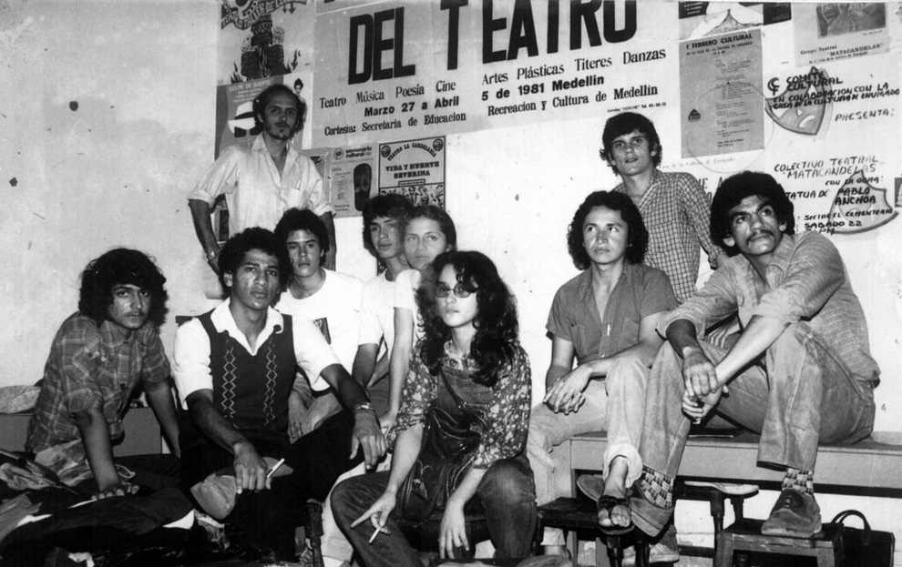
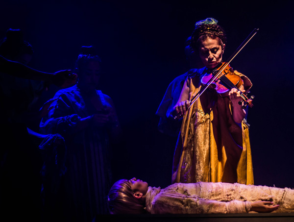
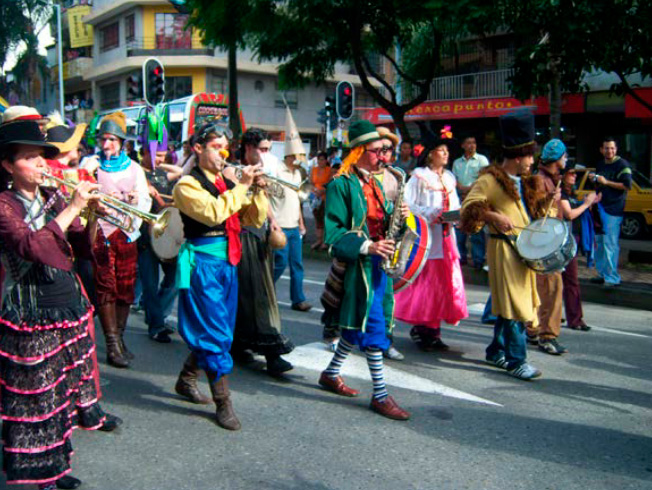
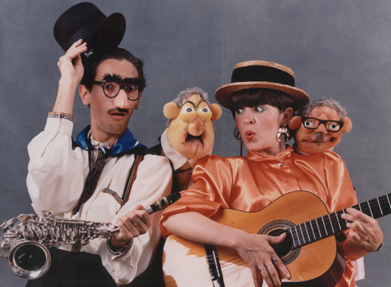
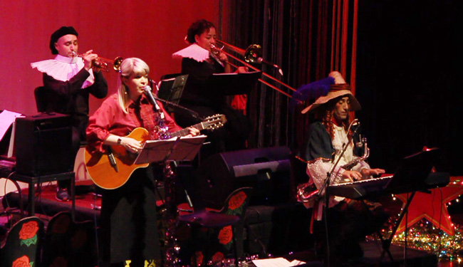
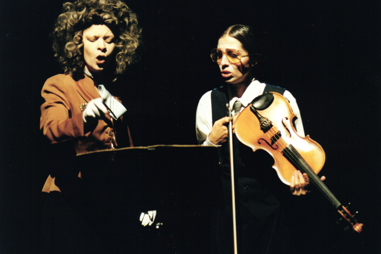

Aproximaciones a lo sonoro y a lo musical en el Teatro Matacandelas
Cristóbal Peláez González
Publicado en la Revista de teatro latinoamericano y caribeño de Casa de las Américas - Edición 199
«Y por una música que ya no se escucha en ninguna parte, me refiero a esa música llamada silencio» Nicanor Parra
Obertura
La música es para oír, y entonces ¿qué necesidad tengo de ir a mirar a los ejecutantes? Es posible que la grabación pueda superar en calidad sonora a la ejecución en vivo, entonces ¿para qué quiero estar en modo presencial? Porque en la ejecución musical hay un principio de teatralidad, disfruto mirar, me gusta ver la transfiguración de los cuerpos, su destreza, su agonía, la prerrogativa del canto y el instrumento en él sucediendo; también la posibilidad de la caída del intérprete, toda ejecución musical en vivo es un desafío funámbulo que confisca de manera poderosa nuestro interés, es una prueba de vida y muerte, nos arrebata, pues el gran meollo del teatro es la seducción, todo lo contrario a la función disuasiva del monigote espantapájaros. La música es un arte practicado por acróbatas.

Todo se transforma y es sujeto a transformarse en música, todo cuanto se oye y todo cuanto se ve, ritmo, armonía y melodía, es para el oído y el ojo, órganos de la contemplación estética y filosófica, intermediarios del cerebro que a su vez hace mediación para la totalidad del cuerpo que insume, y así como ocurre en literatura donde no es la mano la que escribe, sino todo el organismo, el espectador entra al universo del drama con una lectura de la totalidad de su cuerpo, estremecido cuerpo, que trata de llegar al corazón del milagro alquímico de una sinestesia: ver sonidos y oír imágenes.
La palabra es sustancia musical puesto que en la representación no existe la grafía lingüística, es la voz que es sonido y es canto y es ritmo. Y todo se vuelve música en los colores y en las proporciones de la materia, en las líneas, en las formas, en los movimientos, en la luz, ello es posible incluso en el silencio pues todo tiende, inevitablemente y por milagro cósmico, al equilibrio.
El teatro es un arte de la materia, del necesario arrastre de peso. En lo sonoro, en lo musical, toda pesadez se licúa. He aquí el secreto embrujo de la palabra, de la sonoridad, de la musicalidad, de la luz: la levedad. Existencias sin peso.
Aquellos lejanos años no tan lejanos

El Colectivo Teatral Matacandelas fue fundado en 1979 en Envigado (Antioquia, Colombia) y es uno de los pocos casos de los grupos aún existentes que no provienen de aquella efervescencia universitaria de los años sesenta que habría de constituirse en el pivote fundacional del llamado Nuevo Teatro. Se denominaba así, no sin encender voces opuestas, porque —argüían sus adalides— era la irrupción de un malestar que pretendía desacralizar el escenario como un lugar tradicional de entretenimiento y proponerlo como campo de exploración estética, en una tribuna de pensamiento crítico, combate abierto contra una sociedad que todavía vivía anclada a unos comportamientos culturales decimonónicos.
Nuestras ciudades eran aldeas, la clase política dirigente estaba compuesta, por rancios terratenientes y avispados comerciantes para quienes el término cultura estaba ligado de manera estrecha al buen comportamiento, un asunto de correcta etiqueta social, vale decir, a la capacidad individual de aceptar y adaptarse a una realidad inamovible, tal como ellos la habían construido.
Escritura, pintura, música, eran entusiasmos asociados a lo deleznable, a la vagabunda improductividad, actividades subnormales y sospechosas que podían y debían ser objeto de allanamientos y persecuciones policiales, justo en el momento en que se estaba gestando el estallido más contundente de la juventud con la creación del movimiento nadaísta (1), que ante el estigma desdeñoso de puñado de rebeldes, había respondido con un bramido airoso: «La sociedad somos nosotros, los rebeldes son ustedes».

Matacandelas, digo, no provenía de ahí, su nacimiento era la continuidad de una ingenua aventura escénica de impúberes estudiantes de bachillerato que queríamos prolongar los deleites de la representación hasta sus póstumas consecuencias. Pero ya el mundo no era el mismo al de aquellas bucólicas representaciones estudiantiles en las que cundía el alborozo de los sainetes y las mojigangas provenientes de la Galería Dramática Salesiana. Se estaban poniendo en tela de juicio las formas convencionales de la representación y hasta el modelo aristotélico sufría de temblores, y desde allí iban emergiendo novísimos colectivos: Teatro Experimental, en Cali; El Búho, La Candelaria, El Teatro Libre y Teatro Popular, en Bogotá, que proponían otra forma de asumir los modos de creación y producción, por establecer otro tipo de relación con el público. Ya iban circulando, a veces en dudosas copias de mimeógrafo y casi siempre en gastados librillos y folletos, las teorías de Kantor, Brecht, Grotowski y Artaud con sus controvertidos puntos de vista sobre una teatralidad que parecía girar imperturbable frente a las audaces transformaciones de las otras artes. Ya el teatro no se estaba concibiendo solo como un «divino pasatiempo» (Voltaire), también se estaba pensando en cómo transformarlo en una asamblea de crítica, de debate social.
No es raro, entonces, que fruto de aquella efervescencia surgiera a menudo la teatralidad en su forma más primaria, el panfleto, como una manifestación airada de rabia y desahogo directos, sin filtros estéticos, pues el teatro se estaba transfigurando en un púlpito de expresión —y ataque— del oprimido, parecido en su formas y contenidos a todo aquello de donde provenía: estudiantes universitarios que representaban el elemento pensante y cuestionador del sistema, junto a profesionales de otras áreas —medicina, ingeniería, arquitectura— que querían donar parte de su tiempo a una causa revolucionaria y, en más alto grado de compromiso, anónimos jóvenes de barrio que, sin posibilidad de estudio y perspectiva de trabajo, intuían que no tenían nada que perder y sí, en cambio, un mundo por ganar. A cambio de la exigua técnica existía mucho deseo y todavía más rabia.
Salvo esporádicos episodios de representaciones a manos de compañías internacionales que convocaban al glamour social, muchas de ellas zarzuelas y operetas, nuestro peregrino teatro era una actividad de alcantarilla, underground, hecho por desclasificados, casi siempre en masculino, puesto que una mujer que se dedicara al teatro bien podía ser de cuatro en conducta.

Desde siempre había oído decir que quienes se dedicaban al teatro eran putas, maricones y marihuaneros. La verdad es que aquel ramillete de coloridos desclasificados ejerció sobre mí un gran poder de atracción, me imaginé un mundo irregular muy divertido, luego, ya una vez instalado en el teatro como pasión y oficio, me llevé una gran decepción, no era tan así. Exageraban, para mi infortunio, pues nunca he simpatizado con la gente respetable. Recuerdo las palabras de Albert Boadella: «Esto del teatro es un oficio de cabrones, putas y maricones, pero su grandeza es que las putas hacen de vírgenes; los cabrones, de muchachas, y los maricones de don Juan. Esa es la grandeza del teatro».
La escena fue siempre una pasión, un ejercicio de amateurs, nunca fue ni se consideró un oficio. Aparte de la Escuela Nacional de Arte Dramático (ENAD), creada en 1950, y que desde un principio estuvo orientada a la declamación y en los años posteriores a ser centro de formación como cantera de actores para la demanda de la recién llegada televisión, no existían en Colombia verdaderos centros de fundamentación teatral. Estos fueron fenómenos tardíos impulsados por entusiastas con experiencia que lograron a codazos y a punta de empirismo abrir escuelas como las de la Universidad de Antioquia, la Universidad del Valle y la Escuela Distrital de Bogotá. Empieza así la práctica escénica a abandonar su condición devota para entrar al territorio de la normatividad profesional, embrión en el que van a surgir actores, promotores, pedagogos, compañías, equipos de gestión.
El gobierno, que desde 1960 se dedicó a la persecución del teatro por considerarlo un arte subversivo, en los años posteriores decidió ignorarlo por inocuo, y en los noventa, puesto ese gobierno contra la lona en la feroz guerra contra el narcotráfico —y contra la población—, de pronto reconsideró la posibilidad de echar mano de algunas actividades emergentes y marginales para poner paños de agua tibia a la devastación social. Coincide ello con el momento en el que ya el teatro, de perseguido e ignorado, empieza a gozar de alguna aceptación social. Surgen de manera oficial los estímulos económicos para la creación y la circulación. Frente al maelström de la guerra y el exterminio, el teatro no solo representaba una cuota de reflexión y resistencia, también podía ser un mal menor. Recordemos que la democracia colombiana suma en 45 años más muertes y desapariciones que las tres dictaduras juntas de Argentina, Chile y Uruguay. Finalmente, entendió la delincuente dirigencia política colombiana que la cultura podría servir como revulsivo a la hecatombe y también podría ser mampostería, una eficaz forma de darle un bonito frontis al degolladero.
Al interior
«La arquitectura es música congelada».
(Goethe)
Atentos a cuanto acontecía en el contexto local e internacional, en Matacandelas vivíamos una experiencia muy particular. No portábamos la etiqueta de experimentales porque con modestia teníamos conciencia de que para serlo primero debíamos adquirir conocimiento y práctica. Éramos aún un grupo juvenil vocacional, aprendices —toda la vida lo seremos—, y lo más honesto era declararnos en un constante estado de investigación, permeables al amplio espectro de posibilidades que ofrecía esa gran apertura conceptual que venía ofreciendo el teatro desde mediados de siglo.

Mientras tanto nos habíamos dedicado a crear y proyectar un teatro versátil, de fuerte arraigo popular, que a la par que servía de campo formativo a los jóvenes actores también compensaba en sus posibilidades la ausencia de teatros aptos para la representación. Calles, patios escolares, cafeterías, canchas deportivas, carpas, se convirtieron en escenarios en los que lográbamos reunir a grandes corrillos de espectadores que disfrutaban con júbilo la representación, a veces con la curiosidad de quien mira un accidente, con los ojos de quien presencia un fenómeno nunca visto, el extraño hecho de ver criaturas deambulando por un cuadrilátero, que lucen pinturas y vestimentas irreales mientras se mueven y hablan. Algunas veces llegué a oír entre los presentes una pregunta: «¿Y eso de ahí qué es?». «Es teatro», alcanzaba a responder un didáctico alguien. «Ahhh», murmuraba el confundido sin alcanzar a terminar de entender aquello que desfilaba antes sus irresolutos ojos.
El campo de la escenotecnia era prehistórico. No existía entonces en nuestra provincia un concepto sobre áreas de vestuario, sonido, escenografía. En asuntos de iluminación llorábamos: las puestas en escena solían apañarse a lo que hubiere donde fuere, incluso a la luz natural, y algunos colectivos más solventes lograban iluminarse con tarros de latón —donde se comercializaban galletas— que se adaptaban ingeniosamente al disfraz de reflectores. A veces los tubos de cartón hacían las veces de amplificación y las cintas de casete en la portátil grabadora Silver representaban la última locura tecnológica.
Por ello se hacía frecuente que la denominación teatro de la penuria beckettiano o teatro pobre de Grotowski se prestara regularmente a la confusión de ligarlo a la escasez de recursos económicos, no al concepto estético del despojo minimalista. Muchos espectadores llegaban a preguntarse por qué nuestro teatro era tan harapiento. Respuesta: el teatro es un lujo que nos damos los pobres.
En la nuez de creación del teatro Matacandelas, y en parte por el hecho de que uno se sus fundadores, Héctor Javier Arias, era un músico de vocación y ejercicio, habíamos entendido y, más que entendido, decidido, que la música iría a ser un área fundamental en nuestro modo de asumir el escenario. Varios antecedentes fueron clave para esa orientación. Una referencia decisiva la constituyó el Teatro La Candelaria, que con sus obras Guadalupe años sin cuenta y Vida y muerte Severina marcaba un punto muy alto del espectáculo teatral. Allí la música y lo coral concretaban una partitura puntual de representación, no eran elemento de adorno o ambientación, sino sustancia activa, inseparable, del esqueleto dramatúrgico.
Simultáneo por aquellos años, irrumpía un sorpresivo cardumen de grupos barriales que con zancos y coloridas comparsas a ritmo de chirimías y toda suerte de instrumentos exóticos invadían calles y plazas provocando fascinación en la concurrencia. La música era el elemento clave de comunicación entre los espectadores y la representación. El Nuevo Teatro colombiano en el sendero de la construcción de una dramaturgia propia ponía la música en un lugar destacado, espacio que luego iría a ser compartido por la presencia de otras artes y saberes. La llana frontalidad del escenario tradicional a la italiana se iba a ver convertida en una concavidad pletórica de recursos artísticos.
Un hito relevante fue la existencia de los talleres nacionales diseñados y promovidos por la Corporación Colombiana de Teatro (CCT), un aljibe que nos permitió contextualizarnos en el panorama escénico nacional, marcando nuestro desprendimiento del ámbito parroquial. Esos encuentros pretendían realizarse anualmente, pero solo alcanzaron, por asuntos logísticos y económicos, tres ediciones. De manera teórica y práctica cada taller promovió un tema específico de preocupación general. Allí se exploró sobre las relaciones del teatro con la narración, con la poesía, con la música.

Era una especie de manicomio nacional durante el cual un promedio de entre ochenta y cien actores y directores de todo el país, aun de regiones muy distantes, se reunían durante una semana en densas jornadas diarias: en las mañanas se realizaba una sesión central con ejercicios actorales y sus respectivos análisis, en las tardes todos los participantes divididos en grupos se enclaustraban preparando un ejercicio sobre el tema en cuestión, en perspectiva a un muestreo final de clausura y todas las noches se podía disfrutar de una representación teatral, después de la cual no era raro que brotaran espontáneos corrillos de animadas conversaciones, no exentas de rondas en las que, a ritmo de tambor y flautas, se improvisaban cantos y coplas. Frecuente era que esas alebrestadas tertulias traspusieran el conticinio hasta bordear la aurora. Un exceso de apetito de casi veinticuatro horas por conversar, debatir, intercambiar puntos de vista e información. Eran los años de un movimiento teatral adolescente, loco, bohemio, explosivo, irreverente.
El último taller, en 1981, que se propuso aplicar técnicas forenses de disección sobre las relaciones entre el teatro y la música, se realizó en Cali y estuvo orientado por el dúo magistral Santiago García-Enrique Buenaventura, contando con la presencia de los destacados especialistas Luis Bacalov y Blas Emilio Atehortúa. Allí se dimensionó la posibilidad de la música como elemento ineluctable en la representación. Quiere decir que la partitura de palabras y de acciones del texto debía ser sometida en la puesta en escena a una dramaturgia de lo sonoro y lo musical, hecho que hasta entonces se restringía a una servidumbre de ambientación.
Previamente, y diría que casi por intuición, habíamos puesto en marcha en el Teatro Matacandelas el propósito de que cada integrante, además de su fundamentación conceptual y práctica, se aplicara en la disciplina de ejecutar un instrumento musical. Un plan que se ha cumplido rigurosamente hasta el momento.
Voz, cuerdas, vientos, teclados, percusión, a manos y bocas de los actores empezaron a formar parte de sus recursos expresivos, elementos de una iconografía.
Las funciones de lo musical y lo sonoro no pueden, repetimos, subordinarse a lo decorativo para edulcorar la representación o simplemente operar como apoyo emotivo para manipular los sentimientos del espectador.
He ahí algo que supone un gran reto estético para cualquier director, no sucumbir a las trampas de la ilustración y la sublimación.
Prácticas escénicas
«En general, todos los conceptos en que entra la palabra pura,
son sospechosos de escolasticismo:
poesía pura, raza pura, música pura.
Propongo la siguiente definición: poesía pura es toda poesía exenta de impureza.
Puede parecer irritante, pero hay que reconocer que es irrebatible».
Ernesto Sábato
Por divertimento, por considerar que los modos de manifestación teatral son múltiples e incasillables, nuestras formas de representación son variopintas. Nos oponemos a esa peligrosa religiosidad que solo concede carta de existencia al teatro en una sola dirección, que es generalmente el estrecho molde conceptual de quien considera que su excelso cerebro puede determinar el verdadero teatro. ¿Y por qué no pensar a la manera generosamente abierta de Jean Renoir? «Todo aquello que se mueva sobre una pantalla [escenario] es cine [teatro]».

Consecuentes con ello nos movemos en tres direcciones:
Uno: obras festivas orientadas a un público plural, híbrido, para todas las edades: sainetes, comedias, parodias, diversas formas de la representación popular, en las que siempre están presentes la música, el baile, los títeres, el desparpajo, la sátira. Son formas que incitan al goce de la representación en su hacer mismo. En ese orden, entre muchas, están Pinocho, Dicha y desdicha de la niña Conchita, Hechizerías, Blanca Nieves…
Infaltable siempre la música en vivo con los actores como ejecutantes. Canto y danza conforman la liturgia de la representación, celebración tribal de la existencia.
Dos: obras de exploración escénica y poética, orientadas a un público adulto, básicamente juvenil: Juegos nocturnos I y II, La caída de la casa Usher, O marinheiro, Angelitos empantanados, Antínoo, Los ciegos… Algunasde estas obras contienen la ejecución musical en vivo; en otras, con partituras propias, se realizan pregrabados y el elemento nuclear es siempre la exploración en las posibilidades sonoras, para lo que se utilizan equipos de alta tecnología. Todo montaje se divide en dos campos: diseño sonoro y diseño visual.
Tres: obras de contenido histórico y político: La casa grande, Ego Scriptor, Fernando González, velada metafísica,que por su mismo estilo épico narrativo reclaman musicalidad y sonoridad como hecho indisoluble de su dramaturgia. No es raro que estos montajes siempre se hagan a la luz del modelo brechtiano.
Epílogo mientras va bajando muy lentamente el telón
A lo extenso de estos 42 años de Matacandelas, me suelen preguntar, dada la reconocida relevancia que ponemos en ello, sobre la importancia de la música en el teatro. Creo que traspasa el rol de importancia para constituirse en su quintaescencia, definido lo esencial como «aquello que no puede dejar de ser lo que es» (Heidegger). Por supuesto que no nos restringimos solo al género para el cual el espectáculo está previamente determinado, llámese ópera o revista de variedades, nuestra referencia se amplía a todo el concepto de la representación.
Juegos nocturnos I, de 1991, un collage con música en vivo que reunió piezas de corte surrealista de Jean Tardieu, Georges Neveux y Samuel Beckett, fue hasta donde tenemos noticia la primera obra en nuestro país con una tecnología específica de diseño sonoro. Provocó en el público un fervoroso entusiasmo y al mismo tiempo críticas enfadadas de algún sector teatral que consideraba sacrílega e ilícita la creación de personajes en off y otras infracciones sonoras pues la tecnología le resta pureza al teatro.
La puesta en escena de La voz humana de Jean Cocteau fue, en nuestra versión, un murmullo dramático, por toda música el silencio. Tan posible y lícito como la maravillosa versión para Opera de Francis Poulenc, terriblemente trágica en su acento lírico.
La música es un arte del tiempo, el escenario es un arte del espacio, cuando los dos se congregan nos aproximamos a un sentido de la totalidad perceptiva de la realidad. Todo lo que no sea música nos fragmenta, nos disminuye, nos expulsa del eje existencial. Y no estoy hablando solo de instrumentos ni de sonidos.
Voz en off, susurrada y a telón cerrado
Con la vergüenza que arrastra hacer públicas elogiosas palabras, transcribo un breve fragmento de una carta que ha algún tiempo nos envió el musicólogo Pablo Villegas:
«El trabajo de ustedes es hermoso, aunque es contradictoria la frase que tengo para definirlo, no encuentro otra y se que ustedes sabrán de qué hablo. Su trabajo tiene un ritmo diversamente constante. Recuerda a los grandes alemanes Bach, Beethoven, Brahms. Es música, ustedes son música en escena».
Una cosa así es tan hermosa como la música.
1. El movimiento nació en 1958, en Medellín, con el lanzamiento del Manifiesto Nadaísta, por Gonzalo Arango. El nadaísmo significó una revolución en la forma y el contenido del orden espiritual imperante en Colombia.«No dejar una fe intacta, ni un ídolo en su sitio. Todo lo que está consagrado como adorable por el orden imperante en Colombia será examinado y revisado. Se conservará solamente lo que esté orientado hacia la revolución y que fundamente, por su consistencia indestructible, los cimientos de la sociedad nueva. Lo demás será removido y destruido» (Gonzalo Arango).